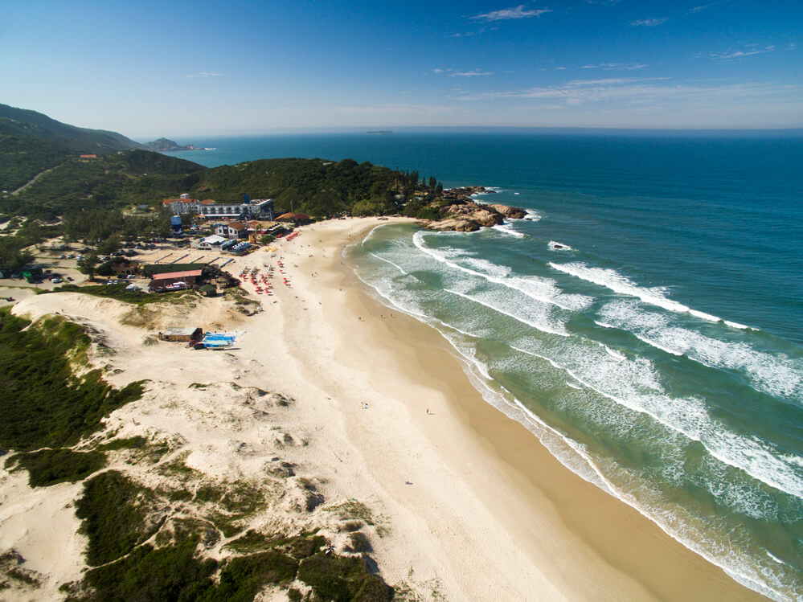
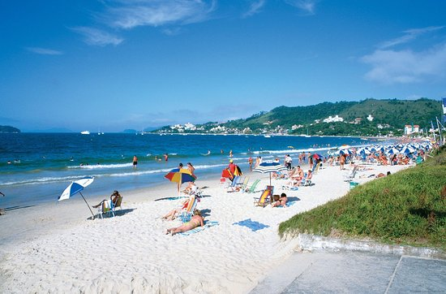
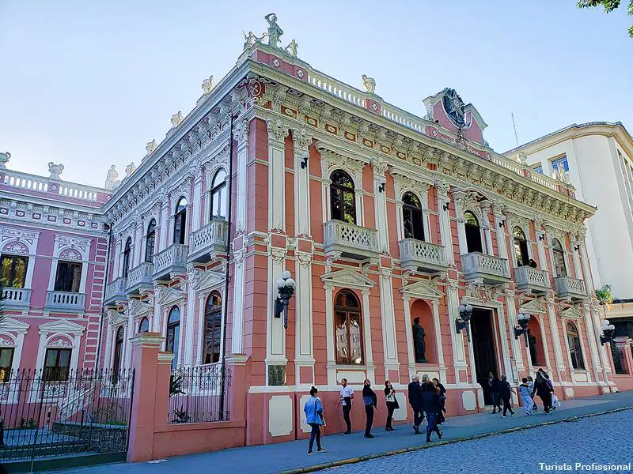

A Praia da Joaquina é um dos pontos de parada obrigatórios para quem visita Floripa e certamente poderia está incluso no seu Roteiro de viagem.
Localizada a 15 km do centro da cidade, ela ficou famosa pela qualidade de suas ondas e já foi palco de campeonatos internacionais de surf; além disso, o mar é limpo e a faixa de areia é larga.
O mar cristalino de águas calmas e mornas é também onde ficam atracados iates e lanchas de luxo. Com mansões e restaurantes sofisticados, a Praia de Jurerê Internacional se destaca pelo seu glamour e é uma das praias mais badaladas do Brasil, pois lá o agito começa ainda na luz do dia!
Se deseja conhecer a história da cidade, esse museu não pode ficar de fora. Localizado no Palácio Cruz e Souza, onde ocorreram diversos acontecimentos políticos e militares, o museu possui arquitetura do século XIX e exposições de objetos e móveis de época, é uma verdadeira viagem no tempo.
Para mais informações acessem o Link